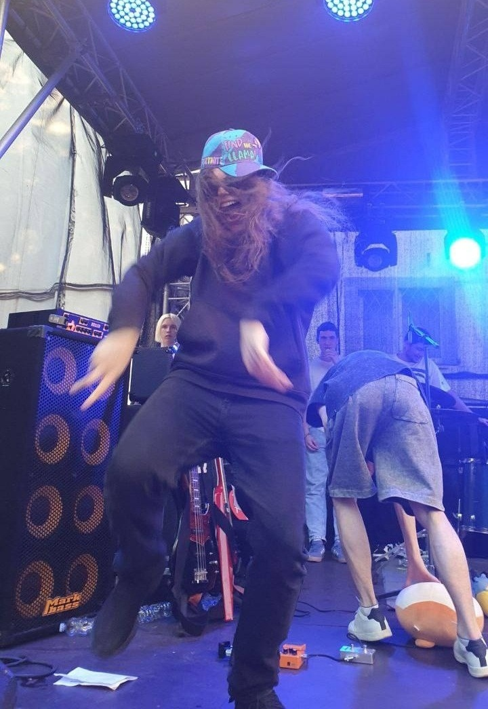
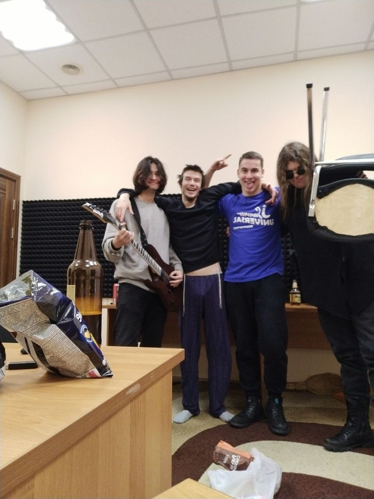

Илья — басист группы, участник расширенного состава.
В Telegram-канале группы (168 тысяч подписчиков) 2 августа 2026 года вышло праздничное сообщение: «СЕГОДНЯ ДЕНЬ РОЖДЕНИЕ ПРАЗДНУЕТ НАШ БАСИСТ ИЛЬЯ БЕРГЕН!!!» — с пожеланиями любви.
В TikTok фанаты называют его «мой отец» и отмечают его бас-партии.